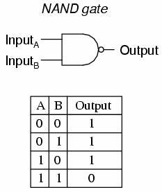
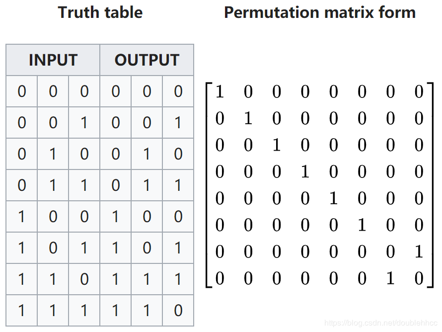

1.1 Physics of information
信息，是编码在物理系统里的；计算，是基于物理器件实现的。因此，信息论可以和物理过程联系起来。目前为止，人们对使用和操纵信息的物理约束有几个里程碑式的理解：
Landauer’s principle. Landauer(1961)指出信息擦除是个耗散过程(dissipative process)。他的理由是擦除总是伴随相空间的缩减，因此不可逆。例如，用一个放有单粒子的中间有隔板的盒子来存储1bit信息。信息擦除过程指的是我们瞬间抽掉中间的隔板，然后在最右侧墙壁插入隔板（不管之前粒子在左半边还是右半边），接着用隔板把粒子缓慢推往左半边，完成信息擦除。这个过程中，单粒子气体减小了的熵。进一步地，如果该过程是在温度下的恒温过程，那么外界对气体做功，这些能量耗散到热源。因此，擦除信息必然需要消耗能量。
Reversible computation. 逻辑门通常是不可逆的，比如NAND门 是2bit输入1bit输出，通过输出无法唯一确定输入。由于这个逻辑门会擦除1bit信息（对所有可能的输入做平均意义下），于是根据Landauer’s principle的要求，要运行这个逻辑门，外界至少做功。因此，如果供电电量有限，计算时长会存在一个理论上界。左下图是NAND门示意：  
然而，Bennett(1973)发现任意计算都能用可逆操作实现，因此原理上任意计算都可以没有耗散，即不会消耗能量。例如，我们可以构造上述NAND门的可逆版本——Toffoli门（右上图）——Toffoli门可以保留所有输入信息： 它表示从输入映射到输出。它是可逆的3bit输入门，只有前两位都是1才翻转第三位。Toffoli门中的那些行对应的输出output的第三列就对应NAND门。因此我们能够将一个不可逆计算NAND门转换成可逆计算Toffoli门，且原理上能够不产生能量损耗。当然，同时也产生了冗余的信息“垃圾”。有人会说，这个所谓的可逆（无耗散）计算只不过推迟了能量消耗，因为擦除这些冗余信息需要额外能量。对此，Bennett指出一个可逆计算机能够运行到计算结束，输出结果的拷贝（拷贝是恒等映射，因此是可逆计算），然后将之前的计算过程反向，恢复到初态。这样就不需要额外能量来擦除这些冗余”垃圾“信息了。
结论很惊奇，原理上做任何计算都可以不消耗能量！但现实中，每个逻辑门器件都会消耗远比$kT\ln2$大得多的能量。因此工程上讨论Landauer’s limit没太大价值。然而，当运算器件越来越小时，计算消耗的能量如果散发不出去，可能会让器件损坏，此时研究可逆计算就变得重要了。
Maxwell’s demon. 上述Landauer和Bennett的洞见引导了Bennett在1982年协调了麦克斯韦妖和热力学第二定律的矛盾。麦克斯韦想象了一盒气体，中间的隔板把它分为A，B两部分空间。隔板上有个demon操纵的小阀门，demon可以观察靠近阀门的气体分子，仅允许速度快的分子从A经过阀门进入B，而让速度慢的分子从B进入A。于是，A不断降温，B不断升温，且这个过程中几乎没有能量损耗（我们假设操纵阀门不需要能量，或者小到可忽略不计）。热量就这样从低温热源流向高温热源而不伴随任何能量损耗，显然违背了热力学第二定律。这就是著名的Maxwell’s paradox。
解决Maxwell’s paradox的关键是要理解demon 必须不断收集和存储气体分子的信息。如果demon的记忆容量有限，那么它就不能无限制地降低气体温度，因为当demon的记忆容量用完后，它必须清除记忆信息才能存储新的粒子信息；而擦除过程需要消耗能量，这些能量抵消了产生温度差（或降温）带来的好处。当然，这个解释会招来质疑：在记忆内存没用完之前，或demon不去擦除记忆，或者我们在擦除前研究整个系统的热力学，难道热二定律就可以不成立了吗？
为了回应这个质疑，我们就要在记忆擦除之前，定义与存储的信息相对应的信息熵。Leo Szilard(1929)在研究Maxwell demon中定义了1bit信息的概念（"bit"的名称是后来Tukey命名的），并且认为获取1bit信息等价于熵增加。显然Szilard并没有完全抓住Landauer’s principle的核心要点，因为后者说的是信息擦除必须要付出代价（熵or能量），而不是信息获取。但不管怎样，Szilard仍旧是研究信息的物理原理的一位先驱。
以上例子表明，物理学与信息论的学科交叉催生出了许多很有趣的结果，吸引了一大批物理学家和计算机科学家。